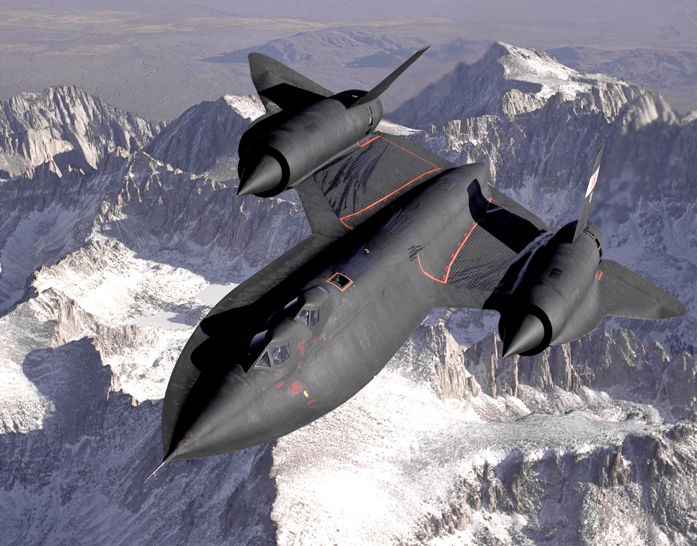

The file
This file documents the Lockheed A-12, YF-12, M-21 and SR-71, the aircraft the world came to call the Blackbirds, from the first Archangel studies in 1958 to NASA's last flight in 1999.
Every photograph, date and figure here comes from a public, citable source, and every one is credited and linked. Article 121 was the program's own name for the first A-12 airframe, serial 60-6924.
NASA 831 over the Sierra Nevada

The two-seat trainer NASA flew as 831, just after refuelling from an Air Force tanker. Move over the print to inspect it the way photo interpreters did, with a loupe. The full site serves every exhibit at the original scan's full resolution. Source record · This airframe's file
Chronology
| Date | Event | Program | Ref. |
|---|
Photographs
Where they are now
Every airframe Lockheed built has its own file: article number, first flight, career, how it ended and the museum where it stands today. Thirteen A-12s, three YF-12As, two M-21s and thirty-two SR-71s, plus the D-21 drones.
Open the register